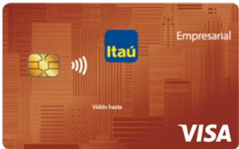
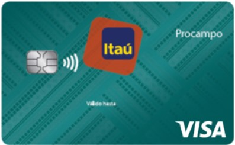

Un cliente PJ puede tener los mismos tipos de cuenta que un PF (excepto Cta Básica), además de los siguientes tipos:
También conocida como línea de crédito variable, es un servicio que ofrece una línea de crédito basada en el promedio de ventas con tarjetas de crédito. Es una opción para individuos y empresas que buscan acceso a fondos adicionales cuando lo necesiten.
En general, la Cuenta Garantizada de Itaú ofrece:
La "cuenta ITB Itaú" se refiere a la cuenta corriente o caja de ahorro de Banco Itaú en Paraguay, que es una entidad financiera con una fuerte presencia en el sector ganadero y de agricultura. Itaú BBA, por otro lado, es el banco corporativo y de inversión del grupo Itaú, que atiende a empresas con mayor facturación y a inversores institucionales.
El servicio de descuento de cheques para empresas en Itaú Paraguay se refiere a la posibilidad de recibir un adelanto de dinero por cheques con vencimiento futuro. Itaú ofrece un servicio de custodia de cheques, donde la empresa puede enviar los cheques para que Itaú los custodie, deposite y gestione, incluyendo la posibilidad de descontarlos si es necesario.
Una "cuenta Infonet Itaú para empresas" se refiere a una cuenta corriente de Banco Itaú, que permite a las empresas manejar sus recursos financieros, realizar transacciones y, a través de la tarjeta Infonet, acceder a la red de cajeros automáticos y comercios afiliados a Infonet. Es una herramienta para gestionar las finanzas empresariales de forma eficiente y segura.

Es un producto destinado a ejecutivos y/o funcionarios de empresas.
Modalidad operativa: Cada tarjeta adicional posee su propia línea de crédito y la suma de las mismas conforman la línea de crédito de la empresa.
Beneficios:
Caracteristicas:

La Tarjeta Pro Campo es una excelente herramienta de supervisión y control de gastos, funciona como instrumento administrativo con informes detallados y consolidados para tu empresa.
Beneficios:
Cobertura:
La tarjeta Pro Campo Empresarial te brinda:
Caracteristicas:
Servicio a través del cual puede recibir en su cuenta corriente o caja de ahorro habilitada en Itau los créditos correspondientes a las ventas con tarjetas de crédito y/o débito, de acuerdo con el plazo de crédito definido y pactado entre su comercio y la administradora de tarjetas de crédito
Este servicio le permite acceder a una línea de crédito pre aprobada según su nivel de facturación, Cuenta Garantizada, permitiendo administrar y controlar su flujo de efectivo a traves de Internet, Mobile y nuestros diferentes canales de atención